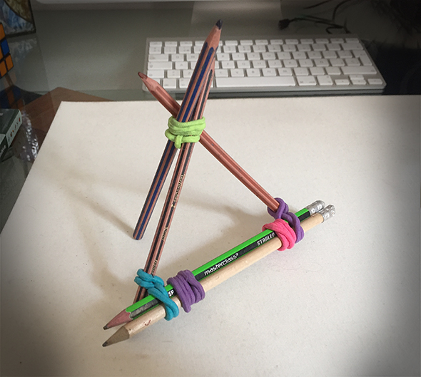

Tripod quick and easy made with just pencils and rubbers made by Maria. So you can record everything you want.



A simple decoration. Threaded origami boats.
Read more →
Here I show you more art of my friend Josefa. A wool sweater tailored for Lu for winter temperatures! She loves being covered. :-)
Read more →
If you want to string beads and the thread is unraveled or bends and a needle will not fit through the beads or the child is…
Read more →
The largest moving eyes of the world. You only need transparent yogurt caps, white cardboard and large buttons. The cap is used as a template on…
Read more →
Simple and edible tree decorations. Turn a wire into the desired shape. House, star, heart, tree .... Then you thread the beads of an eatable chain…
Read more →
Look at our video ! 1. Use spray or paint to color the plastic egg white. 3. Stick the cents on the ground into the egg.…
Read more →